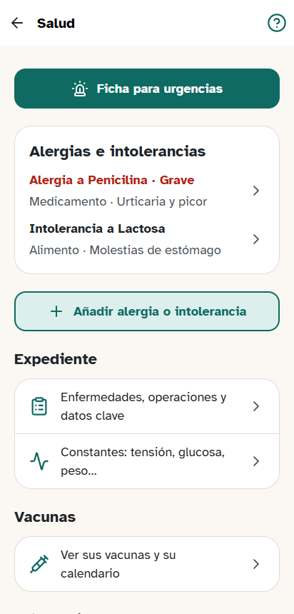

Salud
Alergias, citas médicas, ingresos y documentos.

Alergias e intolerancias
Las ve todo el círculo, para que nadie le dé algo que no puede tomar. Son gratis siempre.
Se apuntan en Salud o en la ficha de la persona cuidada.
Citas médicas
Solo para: coordinación, quien cuida
Apunta cada cita con el sitio, la hora y quién acompaña. Sale en el calendario como turno «Acompañar a una cita médica». Llegan recordatorios el día antes y 2 horas antes.
Con premium, apuntas también la especialidad y el motivo y, después de la cita, el resultado y las indicaciones.
Vacunas
Solo para: coordinación, quien cuida
En Salud → «Vacunas» puedes apuntar las vacunas puestas: cuál, la fecha y, si quieres, el lote y dónde. Es gratis.
Con premium, Tutelia dice qué vacunas le tocan según el calendario oficial de su comunidad autónoma (la elige la coordinación) y avisa 15 días antes. En las que ya tocaban, pulsa «Ya está puesta» o «No se la puso».
Si ya tiene cita, pulsa «Ya tiene cita»: sale en el calendario con quién acompaña y llegan los recordatorios. Al volver, en la cita pulsa «Ya se ha puesto la vacuna» y queda apuntada con su fecha.
Para los niños, el calendario de cada comunidad; para adultos, el común: gripe y COVID cada otoño, y neumococo, herpes zóster y tétanos a su edad. Es orientativo: confírmalo con tu centro de salud.
Ficha para urgencias
✦ Premium · Solo para: coordinación, quien cuida
Arriba en Salud, «Ficha para urgencias» junta en una pantalla lo que pregunta el 112 o urgencias: nombre y edad, grupo sanguíneo, alergias, enfermedades actuales, medicación actual, prótesis, dieta, voluntades anticipadas y contactos de emergencia, con «Llamar al 112» arriba.
También se abre desde un aviso de emergencia en curso. Pide la huella como lo clínico y queda anotada en «Accesos a lo médico». Con «Compartir o imprimir (PDF)» la puedes llevar en papel.
Los datos salen del expediente, las alergias, la medicación y los contactos de emergencia: revisa de vez en cuando que estén al día.
Expediente
✦ Premium · Solo para: coordinación, quien cuida
En Salud, «Expediente» → «Enfermedades, operaciones y datos clave» junta lo importante de su salud: datos clave (grupo sanguíneo, prótesis o marcapasos, audífonos y gafas, dieta y si tiene voluntades anticipadas y dónde), enfermedades actuales y pasadas, operaciones y antecedentes familiares.
Lo ven y lo cambian quienes tienen permiso médico, tras la huella, y cada vez que alguien lo abre queda anotado en «Accesos a lo médico». Las enfermedades actuales, las operaciones y los datos clave salen también en el informe para el médico.
Constantes
✦ Premium · Solo para: coordinación, quien cuida
En Salud, «Expediente» → «Constantes: tensión, glucosa, peso…» guarda la tensión, la glucosa (en ayunas o después de comer), el peso, la temperatura, la saturación y el pulso, con una gráfica de los últimos 7, 30 o 90 días.
Las apunta quien tiene permiso médico o escribe en el diario (también desde «Anotar algo» del diario: «Apuntar una constante (tensión, glucosa…)»), pero solo las ve quien tiene permiso médico, tras la huella. Van en el informe para el médico.
Tutelia no dice si un valor está bien o mal: ante cualquier duda, pregunta a su médico.
Lo médico, con tu huella
Solo para: coordinación, quien cuida · Solo en el móvil
Para ver los datos clínicos (motivo, resultado, indicaciones) la app pide tu huella, tu cara o el PIN del móvil. Se vuelve a cerrar a los 2 minutos sin usarla.
La coordinación puede ver quién ha consultado lo médico y cuándo.
Lo médico, en el ordenador
Solo para: coordinación, quien cuida · Solo en el ordenador
Para ver los datos clínicos (motivo, resultado, indicaciones) en el ordenador, Tutelia te pide otra vez tu contraseña. Se vuelve a cerrar a los 2 minutos sin usarla.
La coordinación puede ver quién ha consultado lo médico y cuándo.
Ingresos en el hospital
✦ Premium
Apunta el ingreso con el hospital, la habitación y el horario de visitas. La coordinación puede cancelar de una vez los turnos de esos días; al dar el alta, vuelven.
Durante el ingreso, algunos avisos se pausan.
Documentos
✦ Premium · Solo para: coordinación, quien cuida
Guarda informes, recetas o pruebas en foto o PDF. Se ven dentro de la app y no se quedan guardados en el móvil.
Informe para el médico
✦ Premium · Solo para: coordinación, quien cuida
Crea un PDF con la medicación, las alergias, las tomas olvidadas y cómo ha estado desde la última cita, para llevarlo a la consulta.
¿Aún no usas Tutelia?
Es gratis para organizar el día a día entre varias personas. Así se empieza.